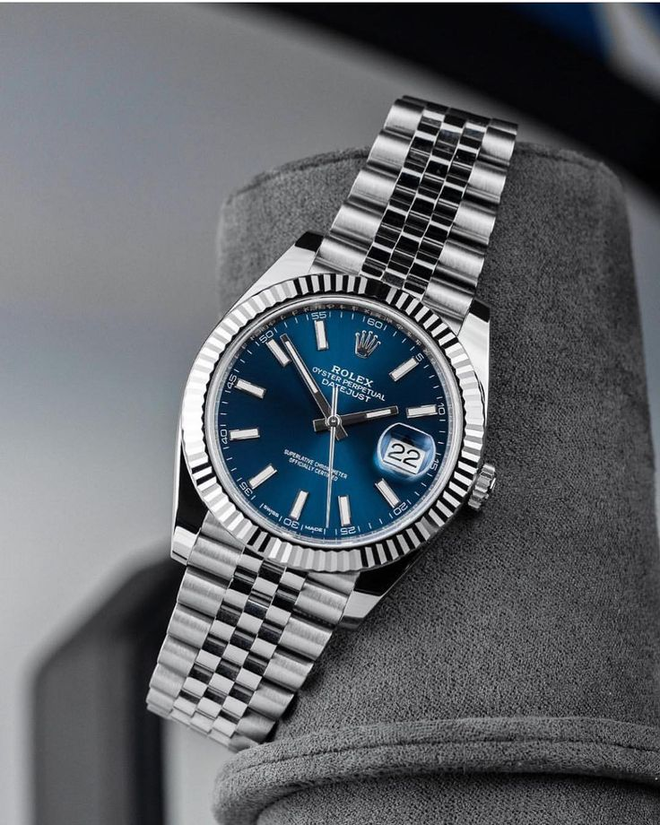

Arius Chrono Elite
Montre automatique de luxe – Édition limitée
2 950 €
Présentation de l’Arius Chrono Elite : Cette montre de prestige allie un design raffiné à une mécanique suisse précise. Chaque pièce est assemblée à la main dans nos ateliers de Genève.
Détails techniques :
- Mouvement : Chronographe automatique Swiss Made (valeur ETA 7750)
- Boîtier : Acier inoxydable 316L brossé (diamètre : 42 mm ; épaisseur : 13 mm)
- Cadran : Noir mat, index et aiguilles luminescents
- Verre : Saphir ultra-résistant (traitement antireflet)
- Étanchéité : 100 m (10 ATM) – Convient baignade et douche
- Bracelet : Acier inoxydable 316L (boucle déployante sécurisée)
Caractéristiques principales :
- Édition limitée (numéro gravé au dos)
- Réserve de marche : 48 heures
- Fonctions : Chronographe, date, petite seconde à 9 h
- Garantie : 2 ans pièces et main d’œuvre
- Livrée dans son écrin en cuir premium avec sur-boîte
Condition : Montre neuve, jamais portée. Livrée avec papiers d’authenticité et manuel d’utilisation.